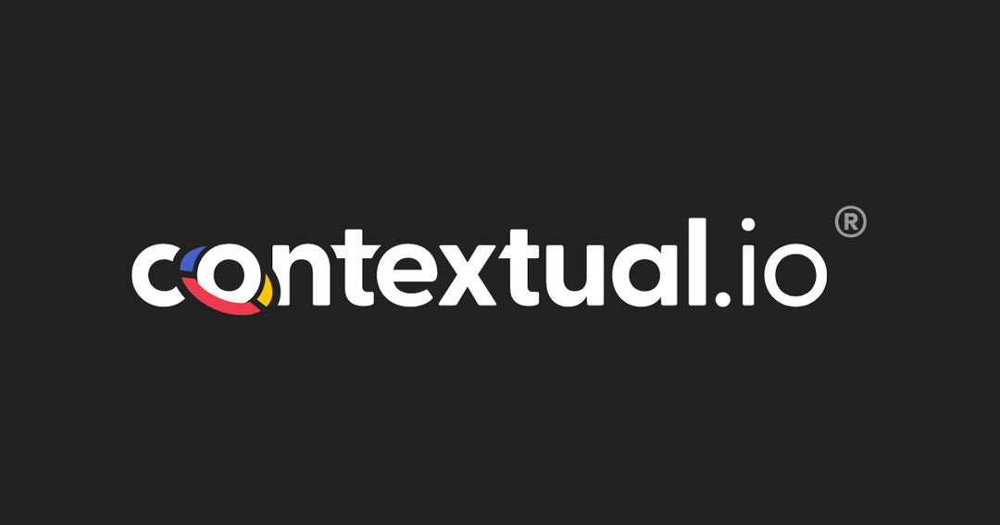

Contextual.io is an AI solutions company that builds analytics tools for its clients. One of those clients is an established player in the US security services industry, and they came to Contextual.io with a hard pricing problem. Setting competitive wages for security guards across 600+ US locations depends on a moving stack of factors: state minimum wage, local cost of living, crime rates, market competition, and contract type. Pricing too low loses margin. Pricing too high loses bids. The client needed a defensible, data-driven way to predict competitive wages for any location, fast, with feature importance maps a non-technical stakeholder could actually read. Our team worked with Contextual.io to build that solution for their client.
The work moved through three phases.
The first was data engineering. The model needed inputs that were both reliable and current, which meant building a real-time pipeline that ingested state minimum wage data and crime indices via public APIs alongside the company's internal records. That foundation kept the model from going stale.
The second was modeling. I built an XGBoost regression model on the assembled dataset, with heavy attention to feature engineering, since the geographic and economic variables interact in ways that a naive model misses. The final model reached an R² of 0.85 and MAE of 0.90 across 600+ US locations, which gave the team a defensible baseline they could trust.
The third was interpretation. Predictions are only useful if the people setting contract pricing understand why the model is saying what it is saying. I used SHAP analysis to produce feature importance maps that explained, for any specific location, which factors were pulling the predicted wage up or down. Those visualizations are what made the model usable as a pricing tool rather than a black box.